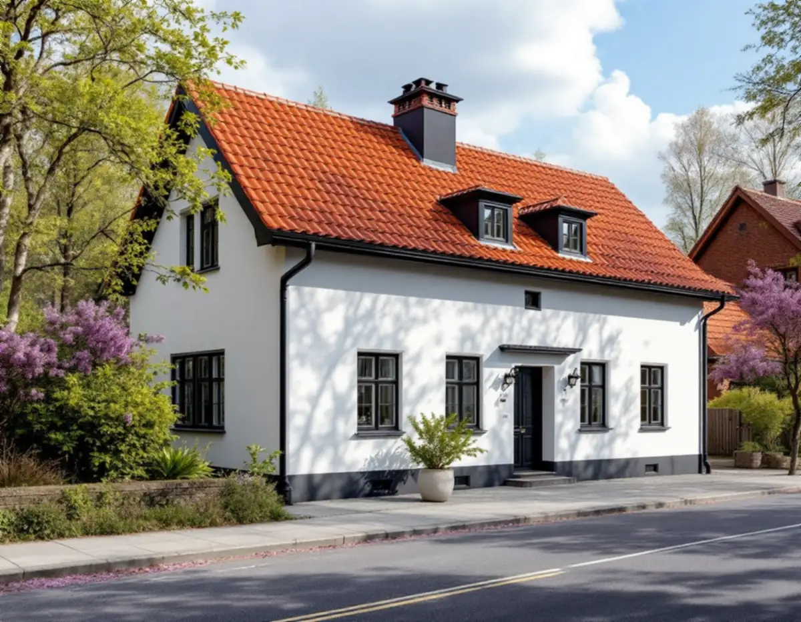
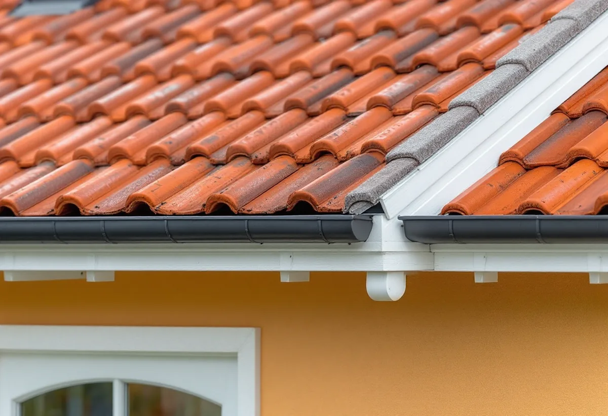

Platsbesök
Vi går igenom plåten på tak, rännor och bleck och noterar vad som är original.

I Solna avgör kulturmiljön ofta hur ett plåtarbete får göras.
Skicka gärna en bild på taket.
Något blev fel. Kontrollera uppgifterna eller ring 08 12 410 276.

Staden skriver att de lovbefriade åtgärderna i många fall inte kan användas, eftersom stora delar av Solna är kulturhistoriskt värdefulla. Geal Entreprenad AB har egna plåtslagare som lagar och byter plåt på villor, radhus och flerbostadshus i Solna, med gratis platsbesök och skriftligt kostnadsförslag.
På sidan om bygglovsfria åtgärder räknar Solna stad upp var undantagen från bygglov inte kan användas. Det gäller i de kulturhistoriskt värdefulla miljöerna i Solnakartan, i riksintressena Karlberg, Solna kyrkby- och radhusbebyggelse, Ulriksdal och Hagaparken, i nationalstadsparken och i de sammanhängande miljöer som översiktsplanen pekar ut.
Till de senare hör Råsunda villastad, villabebyggelsen i norra Råsunda, Råsta egnahem, Alnäs och Stocksundstorp och 1950-talsbebyggelsen i Råsunda. Därtill kommer en- och tvåbostadshus med varsamhets- eller skyddsbestämmelser i detaljplanen, bland annat kring Sjövägen, i Bergshamra by och i Stocksundstorp.
För en villaägare i Solna innebär det att frågan om lov behöver ställas tidigare än i många andra kommuner – och att det lönar sig att skilja på underhåll och ändring redan i offerten.
Boverket skriver att det inte är en fasadändring att byta fasadbeklädnad eller taktäckningsmaterial mot samma material och utförande, utan underhåll. För ett plåtarbete i Solna är det en viktig gräns. Att byta en rostig fotplåt, en sprucken ränndal eller ett skorstensbeslag mot nya delar i samma utförande ändrar inte husets utseende.
Därför börjar vi med att dokumentera det som finns: profiler, falsarnas typ, kulör och hur vindskivor och takfot är utformade. Med det som underlag kan plåten bytas utan att husets karaktärsdrag påverkas, och du har något att visa staden om frågan kommer upp.
Ska taket i stället läggas om eller få nytt material är det en annan sak. Hur vi arbetar med hela tak i kommunen beskriver vi under takrenovering i Solna.
På frågan om man får byta tak eller ändra takmaterial utan bygglov svarar Solna stad nej, och skriver att de flesta områden i staden har en detaljplan. Fastigheter utanför detaljplan har ofta stora kulturvärden och är skyddade på annat sätt.
Enligt Boverkets vägledning efter den 1 december 2025 krävs inget bygglov för att byta material på tak eller fasad på ett en- eller tvåbostadshus, om huset inte är särskilt värdefullt, ligger i ett värdefullt område eller har utökad lovplikt. Eftersom så stora delar av Solna omfattas av undantagen utgår vi från att ett materialbyte – till exempel från tegel till plåt eller från plåt till papp – behöver stämmas av med staden innan något beställs.
Vill du ha ett skriftligt besked kan du kontakta stadens kontaktcenter. Mer om lovfrågan vid takarbeten finns under bygglov vid takbyte.
För byggnader som inte är en- eller tvåbostadshus gäller andra regler. Enligt Boverket krävs bygglov för en fasadändring inom detaljplan när den görs på en fasad eller ett tak som vetter mot en allmän plats, som gata eller park. För en bostadsrättsförening med plåttak eller plåtfasad mot gatan blir materialvalet därför en lovfråga oavsett kulturmiljö.
Rotavdraget skiljer sig också. Skatteverket räknar inte plåt- och glasarbeten utanför den egna bostaden som rotarbete för en bostadsrätt, så plåtarbetet på ett flerbostadshus faktureras föreningen. För dig med villa eller ägt radhus gäller vanligt rotavdrag.
Ett flerbostadshus har dessutom ofta större plåtytor än en villa: fönsterbleck på många våningar, plåtavtäckningar på brandväggar och takfötter som bara nås med hög ställning eller skylift. Vi går igenom dem med föreningens förvaltare och delar gärna upp arbetet i etapper. Söker du en lokal firma för hela taket finns mer under takläggare i Solna.
Vi går igenom plåten på tak, rännor och bleck och noterar vad som är original.
Solnakartan och detaljplanen kontrolleras innan vi föreslår material.
I förslaget skiljer vi på delar som byts i samma utförande och sådant som kräver lov.
Varje del redovisas för sig, med rotavdraget där det gäller.
Plåten bockas efter befintliga profiler och monteras med samma kulör.
Du får en genomgång av vad som har bytts och hur det är utfört.
På ett småhus ger det rotavdrag att reparera, rengöra eller byta plåttak, hängrännor och stuprör, enligt Skatteverket. Avdraget är högst 30 procent av arbetskostnaden, högst 50 000 kr per person och år och högst 75 000 kr tillsammans med rut. Material och resor ger inget avdrag.
Geal gör avdraget direkt på fakturan.
Om plåten kan bytas i samma utförande eller ska tillverkas efter förlaga, hur många detaljer som byts, hur ställningen kan stå på tomten eller mot gatan och om arbetet kräver underlag för en lovansökan. Efter ett gratis platsbesök får du ett skriftligt kostnadsförslag.
Plåttak, hängrännor och beslag.
Plåtslagare i Stockholm →Takbyte, takbesiktning och plåtarbeten.
Takläggare i Solna →Råsunda, Stocksundstorp och Råsta.
Takrenovering i Solna →Kulturmiljöerna, kartan och lovet.
Attefallshus i Solna →Ritningar, kontrollplan och slutbesked.
Byggföretag i Solna →Radhusen, föreningen och lovet.
Fasadmålning i Solna →Putsade villor och krav på material.
Fasadrenovering i Solna →Råsunda, bygglovet och handlingarna.
Fönsterbyte i Solna →Fönster från 1950-talet, kitt och fogar.
Fönsterrenovering i Solna →Ta fram och slipa trägolvet under mattan.
Golvslipning i Solna →Bostadsrätt, stambyte och villor.
Badrumsrenovering i Solna →Bostadsrätter i Råsunda, Hagalund och Huvudsta.
Golvläggare i Solna →Bostadsrätter, fläktar och Råsundas villor.
Köksrenovering i Solna →Villor, radhus och lägenheter i Solna.
Målare i Solna →Väggar, dörrar, balkong och radhus.
Snickare i Solna →Gatusidan, gårdssidan och konstruktionen.
Takbyte i Solna →Tapet efter husets ålder och underlag.
Tapetsering i Solna →Kulturmiljöerna och lovet.
Tillbyggnad i Solna →Hela lägenheten, elen inräknad.
Totalrenovering i Solna →Eller ring 08 12 410 276, mån–fre 08–17.
Skicka gärna en bild på taket.
Något blev fel. Kontrollera uppgifterna eller ring 08 12 410 276.